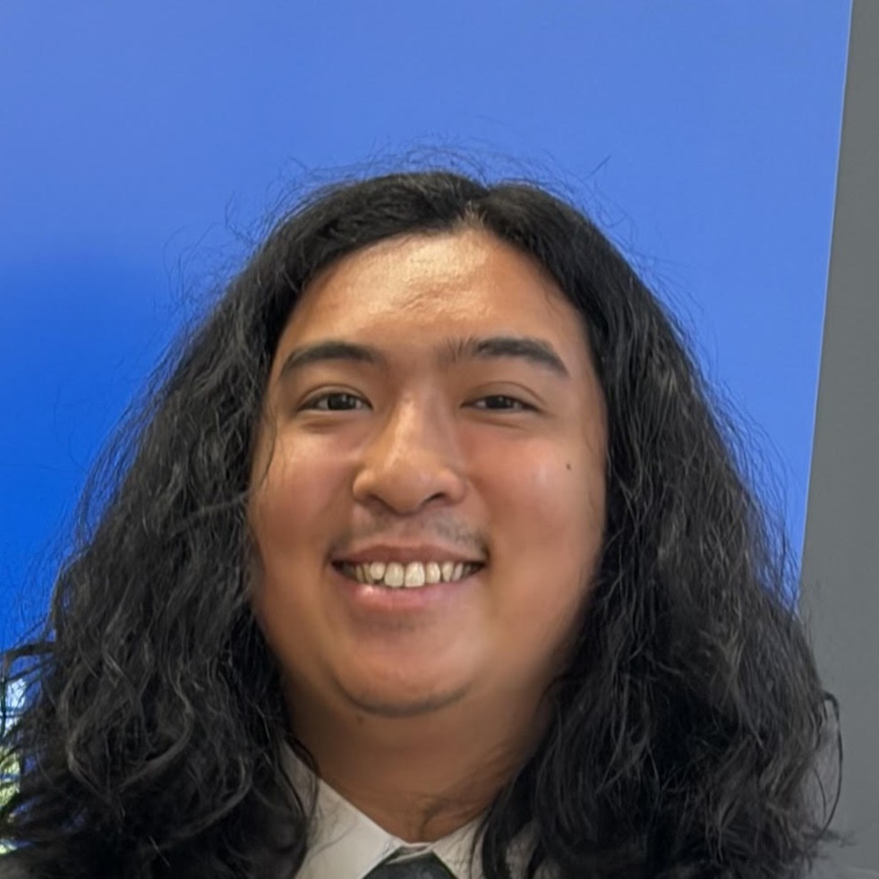
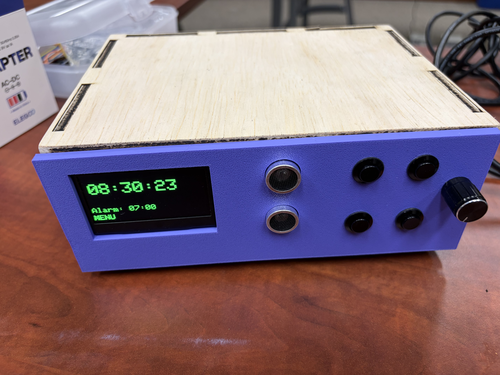

San Francisco State University - Mechanical Engineering
JANUARY 2027 - PRESENT
City College of San Francisco - Mechanical Engineering
AUGUST 2025 - DECEMBER 2026
Year Up - Application Development
AUGUST 2022 - AUGUST 2023
PrimeFlight Aviation Services - Wheelchair Attendant
SEPTEMBER 2023 - JANUARY 2025
• Assisted passengers with limited mobility on and off aircraft, ensuring timely boarding and deplaning while delivering excellent customer service
• Coordinated with gate agents and flight crew to navigate passengers and their belongings through terminals and jet bridges, keeping transfers safe and on schedule
• Ensured accurate delivery of passenger baggage and enabled flight operation efficiency by effectively executing handling procedures while loading, unloading, and routing baggage
• Operated conveyor systems and logging equipment by adhering to safety and operational protocols, maintaining accurate baggage tracking and efficient workflow
• Conducted new hire training by demonstrating best practices and airport protocols, improving safe operations and team readiness
PayPal - Software Engineer Intern
FEBRUARY 2023 - AUGUST 2023
• Enhanced Forward API functionality by developing features in Ruby, Java, and Clojure, contributing to reliable merchant payment processing and platform functionality
• Resolved distributed application issues by debugging code with Vim, IntelliJ, and internal diagnostic tools, improving application reliability and supporting efficient software delivery
• Resolved distributed application issues by debugging code with Vim, IntelliJ, and internal diagnostic tools, improving application reliability and supporting efficient software delivery
• Completed 2–4 Jira tickets per sprint by implementing code changes, debugging issues, and validating functionality, supporting continuous delivery of merchant payment features
• Modified JSON configuration files for merchant integrations by updating API configurations and testing changes, improving compatibility, and supporting successful payment integrations
Skills Developed: Ruby, Java, Clojure, JSON, Git, Jira, Vim, IntelliJ, CPair, Warp
MESA PRIME - City College of San Francisco
JUNE 2026 - JULY 2026
• Developed manufacturing skills by designing, preparing, and producing parts using 3D printing technologies, building hands-on experience with rapid prototyping and engineering design
• Programmed embedded systems by learning to develop applications with microcontrollers, strengthening programming, electronics, and hardware integration skills
• Designed and built a self-directed engineering project by integrating CAD, programming, and embedded hardware, applying classroom concepts to solve a real-world design challenge
• Participated in professional development workshops covering engineering careers, communication, and industry readiness, strengthening professional and technical career preparation
Skills Developed: Fusion 360, 3D Printing, Embedded Systems, Electronics Prototyping, Hardware Debugging, Engineering Design

THE CLOCK
An alarm clock that disables after standing in front of it for a period of time. Designed and fabricated a custom enclosure incorporating laser-cut wooden panels and 3D-printed components.